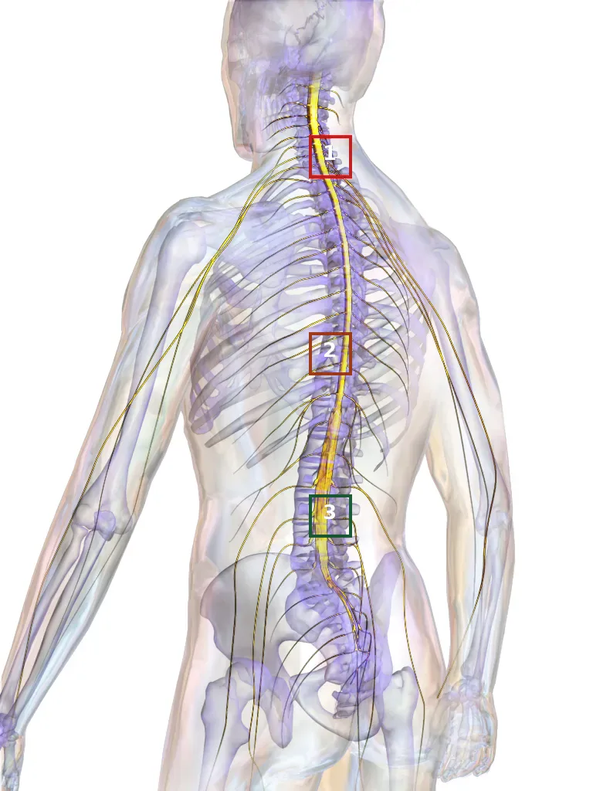
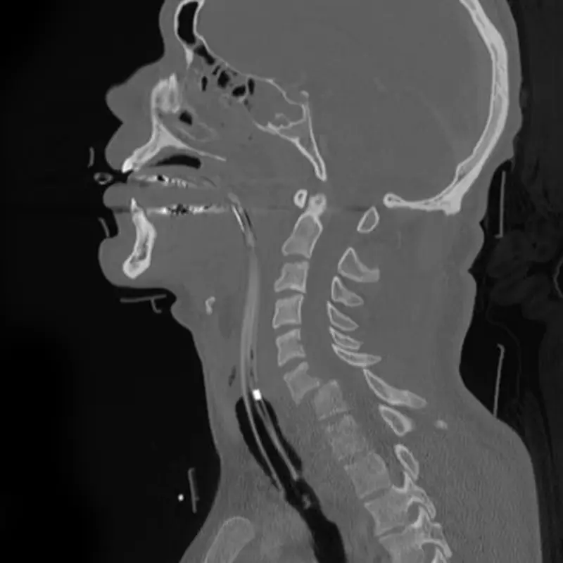

Luxation facettaire cervicale
DX.8 — Luxation facettaire cervicale — 🚩 même bande E, sans ordre de létalité lu
1. Définition
La fondation AO (Arbeitsgemeinschaft für Osteosynthesefragen) Spine définit F4 (facette perchée ou luxée) comme toute subluxation ou luxation, avec ou sans fracture.ao-f
Cette définition couvre la facette perchée et la facette verrouillée, qu’un trait osseux les accompagne ou non.ao-f
Le modificateur bilatéral s’applique quand les deux facettes du même niveau portent le même type de lésion.ao-f
2. Épidémiologie (Suisse, puis Europe)
Les verrous de facette se voient surtout au rachis cervical sous-axial, d’après le comité spinal.wfns-facet
La revue suisse de 2005 rassemble cette luxation, le burst et la tear-drop parmi les lésions cervicales basses instables.rms2005-cx
Une fracture unilatérale qui emporte 40 % de la masse latérale, ou 1 cm de hauteur, échoue plus souvent au traitement sans opération.wfns-facet
La traction précoce par étriers a réduit 97 % des patients d’une série rétrospective.wfns-facet
Dans cette série de 121 patients, 2,4 % n’ont pas été réduits et 1,3 % se sont aggravés.wfns-facet
Une autre série de 117 patients lie un meilleur résultat neurologique à une réduction fermée dans les 4 heures.wfns-facet
Sur 9 patients explorés avant réduction, 2 avaient déjà une hernie discale à l’imagerie par résonance magnétique (IRM).wfns-facet
L’incidence cervicale après traumatisme fermé reste qualifiée de relativement faible par la revue suisse de 2021.rms2021
Le chiffre américain cité alors est de 40 cas par million et par an, pour une prévalence de 0,4 à 0,6 %.rms2021
| Population | Chiffre | Lecture |
| Réduction par étrierswfns-facet | 97 % de 121 patientswfns-facet | Échec 2,4 % et aggravation 1,3 % |
| Fracture unilatérale de facettewfns-facet | 40 % ou 1 cmwfns-facet | Échec plus fréquent sans opération |
| Réduction fermée précocewfns-facet | 4 heures, 117 patientswfns-facet | Meilleur résultat neurologique rapporté |
3. Physiopathologie
La facette lâche quand la flexion distrait l’articulaire et qu’une rotation emporte l’apophyse au-dessus de sa voisine.
Le descripteur F1 (fracture non déplacée) garde un fragment inférieur à 1 cm et à 40 % de la masse latérale.ao-f
Le descripteur F2 (fracture à risque d’instabilité) dépasse 1 cm ou 40 % de la masse latérale, ou bien le fragment est déplacé.ao-f
Le verrouillage bilatéral rétrécit le canal plus franchement que le verrouillage d’un seul côté.
Issu de C3 (troisième vertèbre cervicale) à C5 (cinquième vertèbre cervicale), le nerf phrénique est celui du diaphragme.rms2014
Une atteinte à cette hauteur ou au-dessus peut supprimer la ventilation spontanée du blessé.rms2014
Bruce Blausen a dessiné la moelle en couleur, et le repère 1 est posé sur la moelle cervicale haute.img-moelle
Le repère 2 est posé sur la moelle thoracique, et le repère 3 est posé sur la moelle thoraco-lombaire.img-moelle
L’artère vertébrale longe les foramens, et une luxation qui ouvre ce canal concerne le vaisseau.rms2002


| Perturbation | Ce qui la montre | Conduite liée |
| Facette perchée | Coupe sagittale de l’articulaire | Réduction prudente si le patient coopère |
| Fragment supérieur à 1 cm | Mesure sur la masse latéraleao-f | Risque d’échec du traitement sans opération |
| Canal rétréci par un double verrou | Déficit des quatre membres | Protéger la ventilation avant la coupe |
4. Démarche diagnostique
La luxation facettaire se distingue d’une tear-drop, qui emporte un triangle antérieur du corps.
Elle se distingue aussi d’un burst, dont le mur postérieur du corps est rompu sans facette perchée.
Une lésion ligamentaire pure reste hors de ces dix diagnostics, et la revue de 2005 en fait une indication absolue à part.rms2005-ind
L’isthme instable de C2 (deuxième vertèbre cervicale) sort aussi des dix, et il n’est opéré que si les clichés dynamiques montrent l’instabilité.rms2005-ind
Le piège est d’appeler facette luxée un fragment de F1, encore petit et non déplacé.
Le piège inverse est de laisser sans opération une fracture qui dépasse 40 % ou 1 cm.wfns-facet
Environ 3 % seulement des déficits complets récupèrent pendant les 24 premières heures.rms2005-init
| Concurrent | Signe qui tranche | Piège | Conduite |
| Tear-drop en flexion | Triangle antérieur du corps | Oublier la facette associée | Lire le corps et l’articulaire |
| Burst cervical | Mur postérieur rompu | Confondre les deux instabilités | Fixation le plus souvent |
| Fracture F1 | Fragment sous 1 cm et sous 40 %ao-f | L’opérer comme un verrou | Surveillance si elle reste non déplacée |
| Lésion médullaire | Niveau complet au-delà de 24 heuresrms2005-init | Promettre la marche | Protéger la ventilation |
5. Anamnèse ciblée et drapeaux rouges
L’anamnèse cherche une flexion avec rotation, souvent un choc facial ou une chute tête en avant.
L’heure du verrouillage est notée, avec la question d’un déficit présent dès la première minute.
Un déficit complet qui persiste après 24 heures garde le mauvais pronostic de la revue de 2005.rms2005-init
Une douleur d’un seul bras oriente vers une facette unilatérale, et une tétraparésie vers un double verrou.
La coopération du patient est demandée, la réduction fermée avant IRM n’étant envisagée que chez l’éveillé intact.wfns-kg
Anticoagulants et antiagrégants sont relevés, sans délai d’arrêt inventé dans ce cours.
Un traumatisme crânien associé fait suspecter le cou en même temps que la facette.rms2005-init
Chez la personne inconsciente, l’immobilisation se maintient jusqu’à un examen que l’on peut interpréter.hug
| Drapeau | Sens | Action |
| Déficit qui s’étend | Compression encore évolutiverms2005-ind | Indication absolue de la revue de 2005 |
| Fréquence hors de 10 à 30 | Menace vitale genevoisehug | Ventiler avant de discuter la traction |
| Pouls au-delà de 120 | Choc ou vasoplégie possiblehug | Remplir et chercher une autre hémorragie |
| Patient non coopérant | Réduction fermée à l’aveugle risquéewfns-kg | IRM avant la manœuvre |
Ces seuils s’ouvrent dans la fenêtre des menaces, avant le choix d’une traction.
Version 1,4 du protocole des Hôpitaux universitaires de Genève (HUG), les menaces vitales y sont listées une à une.hug
La voie aérienne compromise vient avant la facette, et l’oxygénation prime sur la position de la tête.hug
Une fréquence inférieure à 10 ou supérieure à 30 impose de traiter la ventilation d’abord.hug
Un pouls supérieur à 120, un pouls radial absent ou l’absence de réponse motrice comptent parmi ces menaces.hug
Ni le geste qui sauve la vie ni le transport vers un centre capable ne sont retardés par l’immobilisation.hug
Pendant l’intubation, le maintien manuel de la tête devrait limiter le déplacement du segment.hug
Fermer6. Examen physique ciblé, région par région
Parole et respiration sont examinées en premier, le diaphragme dépendant des racines hautes.
Le cou se lit dans la fenêtre du cou, les membres dans la fenêtre des membres.
Le thorax se lit dans la fenêtre thoracique, l’abdomen dans la fenêtre abdominale.
L’attitude en torticolis est regardée avant toute palpation, pour ne pas déverrouiller la facette par mégarde.
La palpation recherche un décalage des épineuses et une douleur d’un seul côté.
Un roulis de 20 à 30 degrés suffit pour la peau, et le log-roll complet est inutile.hug
La minerve laisse environ 30 à 50 degrés de mouvement résiduel et ne tient pas une facette à elle seule.rms2021
Le maintien en ligne ramène ce mouvement vers 10 à 15 degrés, à comparer aux blocs de tête.rms2021
Aucune flexion active n’est demandée tant que la coupe n’a pas montré si la facette est perchée.
FermerLa force des quatre membres est cotée, un déficit d’un seul bras évoquant la facette unilatérale.
Le niveau sensitif est répété à chaque transfert, une extension imposant de revoir l’indication.
Environ 3 % des lésions complètes récupèrent pendant les 24 premières heures, sans promesse ajoutée.rms2005-init
Le tonus anal est testé chez le patient coopérant, pour séparer une atteinte complète d’une atteinte partielle.
Les deux côtés sont comparés avant de conclure à un verrouillage bilatéral.
FermerLa fréquence respiratoire est comptée, le diaphragme pouvant être le premier muscle perdu.
Une fréquence inférieure à 10 ou supérieure à 30 est une menace vitale et passe avant la radiographie.hug
Les deux champs sont auscultés, à la recherche d’un pneumothorax du même accident.
Une voix qui s’éteint fait préparer l’oxygène et le monitorage avant le transfert vers l’image.
Fermer7. Approche syndromique
Trois cadres se séparent : radiculalgie unilatérale, déficit bilatéral et hernie discale associée.
La douleur d’un seul bras est décrite dans la fenêtre radiculaire du cours.
Le déficit des quatre membres s’ouvre dans la fenêtre médullaire réservée au double verrou.
La hernie discale associée est décrite dans la fenêtre de la hernie avant la traction.
La douleur suit un dermatome du membre supérieur et la force des autres membres peut rester normale.
Ce tableau évoque une facette d’un seul côté, sans exclure un fragment osseux associé.
Les coupes restent indiquées quand la douleur médiane et le mécanisme concordent.
Une rétention d’urines fait quitter ce cadre radiculaire et oriente vers la moelle.
FermerLa force et la sensibilité s’effondrent sous un niveau, parfois avec un torticolis disparu après le choc.
La marche n’est pas promise si le tableau complet persiste au-delà des 24 heures.rms2005-init
La ventilation est surveillée en continu lorsque le niveau sensitif est cervical.
Chaque transfert est l’occasion de recoter la force, pour saisir une aggravation.
FermerDans la petite série de 9 patients, 2 avaient une hernie déjà visible avant la réduction.wfns-facet
Après réduction, une hernie est présente chez près de la moitié des sujets, avec un faible risque d’aggravation neurologique.rms2005-cx
Ce risque faible ne dispense pas de répéter l’examen neurologique pendant la manœuvre.
L’IRM avant réduction est préférée quand le patient ne peut pas signaler une douleur nouvelle.
Fermer| Syndrome | Signes fonctionnels | Signes physiques |
| Radiculaire unilatéral | Douleur dans un dermatome | Force souvent conservée ailleurs |
| Bilatéral | Faiblesse des quatre membres | Niveau sensitif |
| Hernie associée | Possible avant la réductionwfns-facet | Près de la moitié après réductionrms2005-cx |
8. Diagnostic positif et critères
Le diagnostic positif est la facette perchée ou luxée, nommée F4, avec ou sans fracture.ao-f
F1 reste une fracture non déplacée, fragment plus petit que 1 cm et que 40 % de la masse latérale.ao-f
F2 devient instable en puissance dès que le fragment dépasse 1 cm ou 40 %, ou dès qu’il est déplacé.ao-f
Le modificateur bilatéral est ajouté si les deux facettes du même niveau sont du même type.ao-f
Un cliché de profil qui montre deux articulaires superposées ne suffit pas à exclure un verrou d’un seul côté.
La tomodensitométrie (TDM) des articulaires permet de séparer la facette perchée de la facette en place.
| Critère | Seuil | Conséquence |
| F1ao-f | moins de 1 cm et moins de 40 %ao-f | Peut rester non opératoire si rien ne se déplace |
| F2ao-f | plus de 1 cm ou plus de 40 %ao-f | Échec plus fréquent sans opération |
| F4ao-f | subluxation ou luxationao-f | Réduction et stabilisation |
| Bilatéralao-f | même type des deux côtésao-f | Le modificateur est ajouté au libellé |
9. Examens complémentaires
L’os de référence est la tomodensitométrie, et l’IRM juge le disque avant une réduction à risque.
La fenêtre du scanner montre l’articulaire, et la fenêtre de l’IRM cherche la hernie.
Si le foramen transversaire est touché, une angio-IRM devrait être réalisée, comme l’écrit la revue de 2002.rms2002
Chez le patient éveillé, intact et coopérant, une réduction fermée avant l’IRM peut être envisagée.wfns-kg
Chez le patient au déficit complet mais encore éveillé, une réduction fermée urgente peut aussi être envisagée.wfns-kg
Chez la personne qui ne coopère pas à l’examen, l’IRM précède toute manœuvre de réduction.
La règle NEXUS (National Emergency X-Radiography Utilization Study) et la règle canadienne ont une sensibilité proche de 99 %.rms2021
Cinq critères cliniques composent la règle NEXUS, et ils ne remplacent pas la coupe quand l’un d’eux est présent.rms2021
Frank Gaillard décrit cette reconstruction sagittale comme une fracture-luxation de C6 (sixième vertèbre cervicale) sur C7 (septième vertèbre cervicale), licence 3,0.img-facet
Une sonde d’intubation est visible dans la voie aérienne, et aucune flèche de ce cours n’a été ajoutée.
Le verrou de la facette ne se certifie pas sur cette seule coupe médiane, et les coupes articulaires restent nécessaires.

Ce fichier ne mesure pas un déplacement en millimètres et ne classe pas F1, F2 ou F4 à lui seul.
FermerL’IRM recherche une hernie, une rupture ligamentaire et un hypersignal de moelle.
Elle a montré une hernie chez 2 des 9 patients examinés avant la manœuvre.wfns-facet
Le rôle de cette IRM préopératoire reste discuté dans la revue suisse, le risque neurologique après réduction étant jugé faible.rms2005-cx
L’examen neurologique répété reste nécessaire à chaque étape de la traction, malgré cette discussion.
Fermer| Résultat | Sens | Conduite |
| Facette perchée | F4ao-f | Réduction prudente puis stabilisation |
| Fragment au-delà de 40 % | Risque d’échec sans opérationwfns-facet | Discuter la fixation |
| Hernie avant réduction | 2 patients sur 9wfns-facet | Préférer la voie antérieure |
| Foramen ouvert | Artère vertébralerms2002 | Angio-IRM |
10. Arbre décisionnel
Quand la fréquence sort de 10 à 30 ou que le pouls dépasse 120, ventilation et remplissage passent avant la facette.hug
Si le patient est éveillé, intact et coopérant, la réduction fermée avant IRM peut être discutée.
Quand le patient ne coopère pas, l’IRM est obtenue avant toute tentative de réduction.
La séquence publiée pose d’abord 5 kg, puis ajoute 2 kg toutes les 10 minutes jusqu’au déverrouillage ou à une distraction excessive.wfns-kg
L’échec de cette traction conduit sans délai à une réduction ouverte, pour réaligner le canal.wfns-kg
La plupart des verrous se traitent par voie antérieure, quelques-uns par voie postérieure, rarement par un abord combiné à 360 degrés.wfns-facet
Le consensus de 2024 recommande d’envisager décompression ou stabilisation dans les 24 heures, après les détresses, avec un accord de 92 %.wses-24
Le même comité rappelle une chirurgie précoce entre 12 et 72 heures chez le blessé médullaire cervical.wfns-delai
11. Prise en charge
11.A But
Le but immédiat est un canal réaligné et une ventilation protégée, sans aggravation pendant la manœuvre.
Quand une lésion médullaire est présente, la pression artérielle moyenne (PAM) est maintenue au-dessus de 85 mmHg pendant la chirurgie d’urgence.wses-24
Le but définitif est une facette réduite et un segment qui ne se reluxe pas au lever.
11.B Moyens
Le déroulé minute par minute se lit dans la fenêtre chronologique de la réduction.
Le traumatisme fermé avec atteinte médullaire possible est immobilisé, et le geste vital reste prioritaire.hug
Sans déficit avéré, le traumatisme pénétrant isolé ne doit pas être immobilisé.hug
Chez le patient intubé, la minerve rigide reste indiquée pour tenir l’axe tête-cou-tronc.hug
À Neuchâtel, la minerve rigide a été abandonnée dès 2020 hors de cette situation d’intubation.rms2021
La luxation est une urgence relative et doit être réduite avec prudence.rms2005-cx
La traction chiffrée plus haut est celle du comité de 2020, et non une dose suisse d’un médicament.wfns-kg
La voie antérieure suffit pour la plupart des verrous, la voie postérieure servant si l’avant ne déverrouille pas.wfns-facet
Les corticoïdes à haute dose des essais NASCIS (National Acute Spinal Cord Injury Study) sont déconseillés par une recommandation forte.wses-24
La revue suisse de 2014 ne préconise plus cette corticothérapie dans la lésion médullaire aiguë.rms2014
Aucun milligramme de corticoïde n’est écrit, et la molécule est hors information professionnelle (AIPS) pour cette indication.
La compression pneumatique intermittente est recommandée dès que possible contre la thrombose.wses-24
La douleur légère relève du paracétamol, et la douleur forte de la morphine si le crâne le permet.
Après chirurgie orthopédique à haut risque, l’énoxaparine suit la fiche, sans extension au blessé médullaire hors texte.
Voie aérienne et ventilation passent avant la traction lorsque la fréquence sort de 10 à 30 ou que le pouls dépasse 120.hug
Le maintien manuel de la tête précède la pose du matelas coquille.
L’examen neurologique est daté et écrit avant la première pesée de la traction.
La séquence pose 5 kg au départ et ajoute 2 kg toutes les 10 minutes jusqu’au déverrouillage.wfns-kg
L’ajout de poids est interrompu devant une aggravation neurologique ou une distraction excessive.wfns-kg
La discussion opératoire dans les 24 heures vient après le contrôle des détresses, chez le patient sauvable.wses-24
FermerParacétamol Stada, numéro 58530, mise à jour de juillet 2026, couvre la douleur post-traumatique légère à modérée.aips-58530
Pour l’adulte, « La dose quotidienne maximale de 4000 mg de paracétamol ne doit pas être dépassée. »aips-58530
Au-dessus de 40 kg, chaque prise va de 500 à 1000 mg, sans dépasser 4 g, soit 8 comprimés, en gardant 4 à 8 heures.aips-58530
Entre 10 et 50 ml/min de clairance, l’intervalle devient 6 heures et le plafond atteint 3000 mg par jour.aips-58530
Sous 10 ml/min, l’intervalle devient 8 heures et le plafond atteint 2000 mg par jour.aips-58530
| Rubrique | Texte de la ficheaips-58530 |
| Grossesse | À posologie correcte, le risque de malformations et de troubles de l’adaptation est actuellement considéré comme faible.aips-58530 |
| Allaitement | La prudence est de mise lors de l’utilisation pendant l’allaitement.aips-58530 |
| Contre-indication | Hypersensibilité, atteinte hépatique grave et maladie de Gilbert.aips-58530 |
Morphine du numéro 53571, mise à jour de février 2024, pour une douleur forte qui résiste au non-opioïde.aips-53571
En sous-cutané, l’adulte reçoit 10 mg pour 70 kg toutes les 4 à 6 heures, dans une fourchette de 5 à 20 mg.aips-53571
Par voie veineuse, la fiche indique 2,5 mg toutes les 5 minutes, en injection lente.aips-53571
Traumatisme crânien et hypertension intracrânienne contre-indiquent la morphine, et cette ligne ne répète aucune dose.aips-53571
| Rubrique | Texte de la ficheaips-53571 |
| Grossesse | Elle ne doit pas être administrée pendant la grossesse, sauf en cas de nécessité absolue.aips-53571 |
| Allaitement | Il est absolument contre-indiqué d’allaiter.aips-53571 |
| Contre-indication | Dépression respiratoire, iléus paralytique, insuffisance hépatique ou rénale sévère, traumatisme crânien.aips-53571 |
Clexane, numéro 49456, mise à jour de février 2026, écrit la prophylaxie de la chirurgie orthopédique et de la chirurgie générale.aips-49456
Le risque modéré reçoit 20 mg, soit 2000 UI, la première injection environ deux heures avant le bloc.aips-49456
Le haut risque orthopédique reçoit 40 mg, soit 4000 UI, la première injection 12 heures avant.aips-49456
La durée moyenne écrite est de 7 à 10 jours, et la prolongation orthopédique ajoute 40 mg pendant 3 semaines.aips-49456
Hors de cette indication écrite, le blessé médullaire reste hors AIPS, et aucune dose n’est inventée.aips-49456
« Dans une étude clinique portant sur 8 femmes enceintes porteuses d'une prothèse valvulaire cardiaque » des caillots graves sont décrits.aips-49456
Sous 1 mg/kg donné 2 fois par jour, ces caillots ont entraîné le décès de la mère et du fœtus.aips-49456
| Rubrique | Texte de la ficheaips-49456 |
| Grossesse | Elle ne doit être utilisée pendant la grossesse que si le médecin a établi un réel besoin clinique.aips-49456 |
| Allaitement | L’allaitement n’est pas recommandé, et le flacon multi ne doit pas être utilisé chez le nouveau-né.aips-49456 |
| Contre-indication | Hémorragie active, accident vasculaire cérébral hémorragique récent, thrombopénie à l’héparine dans les 100 derniers jours.aips-49456 |
11.C Surveillance
Force et sensibilité sont recotées après chaque ajout de poids et après la réduction ouverte.
La traction est arrêtée devant un déficit qui s’aggrave ou devant une distraction excessive à la radiographie.wfns-kg
Pendant la chirurgie d’un blessé médullaire, la pression artérielle moyenne reste au-dessus de 85 mmHg.wses-24
Après morphine, la dépression respiratoire est surveillée et la naloxone reste disponible.
Dans l’indication orthopédique écrite, la prophylaxie se limite en général à 7 à 10 jours, jusqu’à la marche.aips-49456
Une reluxation au lever fait revoir la fixation, sans attendre la consultation suivante.
11.D Pronostic
L’aggravation sous traction a concerné 1,3 % des 121 patients, ce qui reste rare et non nul.wfns-facet
La réduction dans les 4 heures a été associée à un meilleur résultat neurologique dans la série de 117 patients.wfns-facet
La chirurgie dans les 24 heures n’apporte qu’un bénéfice modeste, et seulement pour les lésions incomplètes, dans la revue de 2005.rms2005-init
La sortie exige un examen stable, une facette tenue et un suivi capable de voir une reluxation.
La guérison ne se juge pas sur la disparition de la douleur seule.
Une facette perchée reste au contact de sa voisine, tandis qu’une facette verrouillée est passée devant elle.
Le côté douloureux et le torticolis orientent vers le verrou unilatéral avant même la coupe.
Le double verrou se soupçonne quand les quatre membres faiblissent et que le torticolis a disparu.
Chaque poids ajouté est écrit avec l’heure et le score moteur du moment.
La radiographie de contrôle cherche une distraction excessive, motif d’arrêt de la traction.wfns-kg
Le patient éveillé dit si une douleur nouvelle apparaît dans un bras pendant la manœuvre.
L’absence de plainte ne rassure pas chez le patient sédaté, et la manœuvre est alors différée.
La voie antérieure enlève le disque si une hernie est déjà vue, et la plaque maintient la réduction.
La voie postérieure déverrouille directement la facette quand l’abord antérieur n’y parvient pas.wfns-facet
L’abord combiné reste rare et se réserve aux échecs des deux voies séparées.
Le collier seul ne maintient pas une facette qui s’est déjà perchée sur un patient coopérant.
Après la réduction, le patient est retourné au lit en bloc, sans torsion du cou.
Le compte rendu nomme le niveau, le côté, la présence d’une fracture et l’état du disque.
Un compte rendu qui dit seulement luxation, sans le côté, est insuffisant pour choisir la voie.
Un fragment de F2 sur la même facette est le degré le plus haut, et le verrou l’emporte sur la fracture.
Si plusieurs lésions touchent la même facette, seul le degré le plus haut est retenu dans le libellé.ao-f
Le côté droit est cité avant le côté gauche quand les deux degrés diffèrent.ao-f
Cette règle de libellé évite de compter deux diagnostics pour un seul niveau.
La famille est informée que la traction peut échouer et que le bloc reste alors indiqué.
L’aggravation existe, elle a concerné 1,3 % d’une série, et elle n’est pas présentée comme impossible.wfns-facet
Le suivi à la marche vérifie que la facette réduite ne se perche pas de nouveau.
Une douleur neuve dans un dermatome après le lever fait refaire la coupe.
Le sevrage de la minerve, là où elle a été posée, suit l’avis de l’équipe qui a fixé.
Le patient anticoagule selon la fiche seulement si l’indication orthopédique écrite est réunie.
Hors de cette indication, la compression pneumatique reste le moyen cité, sans milligramme ajouté.
12. Prévention
La prévention primaire suit les mécanismes lus, choc et chute, sans texte de l’Office fédéral ajouté dans ce cours.
La prévention secondaire est de ne pas mobiliser une facette suspecte et de ne pas donner de corticoïde à haute dose.
Le maintien manuel et le refus du log-roll complet limitent l’aggravation pendant le brancardage.hug
La compression pneumatique dès que possible est la prévention de la thrombose retenue par le consensus.wses-24
Là où le protocole a abandonné la minerve rigide en 2020, l’immobilisation adaptée reste néanmoins en place.rms2021
Ces gestes visent les mêmes blessés que l’épidémiologie : chutes, accidents et verrous sous-axiaux.
Sur la coupe sagittale, l’articulaire normale se superpose comme deux pentes qui glissent l’une sur l’autre.
Une facette perchée montre la pointe de l’apophyse posée sur le sommet de la facette d’en dessous.
Une facette verrouillée montre cette pointe passée en avant de la facette inférieure.
L’axiale confirme que le déplacement est articulaire et non un simple artefact de coupe.
Le fragment osseux, s’il existe, est mesuré avant de choisir entre F1 et F2.
Le disque est regardé sur l’IRM quand elle a été faite, à la recherche d’un recul dans le canal.
Le ligament interépineux élargi sur l’IRM renforce l’idée d’une distraction des éléments postérieurs.
L’absence d’hypersignal médullaire ne permet pas de conclure que la moelle est hors de danger à long terme.
Le compte rendu compare le côté droit et le côté gauche sur les mêmes coupes.
Une facette normale du côté opposé rassure seulement pour ce côté, pas pour le côté perché.
Le foramen transversaire est suivi de C6 vers le haut sur les axiales successives.
Une asymétrie du foramen fait demander l’angio-IRM, selon la règle déjà citée pour le vaisseau.
Le chirurgien reçoit le niveau exact, par exemple C6 sur C7, et non un « cou bas » vague.
L’heure de chaque cliché est gardée, pour savoir si la réduction a précédé l’image.
Une image après traction est comparée à l’image d’arrivée, sans se fier à la mémoire du déplacement.
Le patient est prévenu que plusieurs contrôles seront nécessaires avant le lever.
Le lever n’est pas autorisé tant que l’équipe n’a pas confirmé que la facette tient.
La douleur au lever est distinguée d’un nouveau déficit, les deux n’ayant pas la même conduite.
Un déficit neuf au lever fait recoucher le patient et refaire la coupe.
La famille reste auprès du patient pendant l’attente, sans tirer sur le cou pour le redresser.
Les vomissements sont anticipés, la morphine et le crâne ayant déjà été croisés dans la fiche.
L’enfant est examiné avec la même immobilisation, l’anamnèse étant souvent tenue par l’accompagnant.
La personne âgée est suspecte de facette même après une chute de sa hauteur, si le cou est douloureux.
La grossesse ne supprime pas la coupe quand la facette est suspecte, l’instabilité justifiant l’irradiation.
L’allergie au produit n’empêche pas le scanner osseux sans injection, qui suffit pour voir la facette.
L’IRM impossible est compensée par un examen neurologique répété et par la coupe osseuse.
Le bloc est prévenu tôt afin que la salle soit prête en cas d’échec de la traction.
Le poids total posé est noté, afin de transmettre un chiffre clair à l’équipe suivante.
Aucun poids n’est ajouté pendant un trouble de la parole ou une baisse de force.
La distraction excessive se voit sur la radiographie par un écart discal qui s’ouvre trop.
Cet écart fait retirer du poids avant qu’une lésion ligamentaire supplémentaire n’apparaisse.
Après déverrouillage, la tête est maintenue en ligne jusqu’à la fixation ou jusqu’au collier décidé.
Le choix du collier ou de la plaque est celui de l’équipe, et ce cours ne le remplace pas.
La plaque antérieure permet d’enlever en même temps un disque herniaire déjà démontré.
La vis postérieure tient la facette quand l’avant n’a pas suffi à la garder en place.
Les deux montages posés ensemble restent l’exception, réservée à l’instabilité qui persiste encore.
Le patient sait qu’il ne conduira pas tant que la rotation du cou n’est pas sûre.
Le travail physique est suspendu jusqu’à l’avis du chirurgien qui a fixé.
La kinésithérapie respiratoire commence tôt si le niveau est cervical et que la toux est faible.
Les points de compression du matelas sont surveillés, l’escarre pouvant apparaître vite.
Le passage aux urgences est tracé, avec le nom du médecin qui a autorisé la traction.
Une aggravation pendant la nuit fait rappeler le chirurgien, sans attendre la visite du matin.
Le dossier emporte les coupes, pas seulement le compte rendu, lors du transfert de service.
Le centre receveur est prévenu du niveau et du côté avant l’arrivée du brancard.
Rien dans ces gestes ne remplace le jugement de l’équipe qui voit le patient.
13. Points clés
Une facette perchée est un F4, avec ou sans fracture, et non un petit fragment non déplacé.
La réduction fermée avant IRM se discute chez l’éveillé coopérant, pas chez le patient qui ne peut pas parler.
Aucun milligramme de corticoïde n’est écrit quand une lésion médullaire accompagne la luxation.
Un foramen transversaire ouvert impose une angio-IRM avant de clore le bilan vasculaire.
Sous traction, 1,3 % des 121 patients se sont aggravés, et l’examen est répété à chaque poids.wfns-facet
Le brancardier annonce le côté lésé avant de tourner le patient vers le scanner.
Le médecin qui autorise la traction reste dans la salle pendant les premiers poids.
Chaque radiographie de contrôle est lue avant d’ajouter les 2 kg suivants de la séquence.wfns-kg
Ces 2 kg ne sont ajoutés que toutes les 10 minutes, et seulement si la neurologie tient.wfns-kg
Le déverrouillage, senti par le patient ou vu sur la radio, fait stopper l’ajout de poids.
Le patient est alors maintenu en ligne jusqu’au choix entre plaque et collier.
La plaque est préférée quand une hernie a déjà été vue sur l’IRM.
Le collier provisoire ne remplace pas la décision de l’équipe de garde.
Le transfert en réanimation, s’il a lieu, emporte le détail des poids déjà posés.
L’infirmière relève la force des poignes à l’arrivée et après chaque mobilisation du patient.
Une baisse d’une seule poigne fait suspendre la traction et rappeler le chirurgien.
Le côté sain sert de comparaison, et il est coté lui aussi.
La nuque est inspectée à la recherche d’une plaie qui changerait l’abord.
Une plaie postérieure oriente vers un risque infectieux si la voie postérieure est choisie.
Le rasage et l’antiseptique attendent que le côté opératoire ait été confirmé à voix haute.
Le patient entend le risque rare d’aggravation avant de consentir à la traction.
Ce risque a été mesuré à 1,3 % dans la série de 121 patients, et il est dit tel quel.wfns-facet
Le consentement est noté, ou l’urgence est tracée si le patient ne peut pas signer.
La nuit, le même protocole de poids et d’examen s’applique, sans version allégée.
Le matin, le senior relit les coupes et les scores de la nuit.
Une facette encore perchée au matin impose le bloc, sans nouvel essai de traction aveugle.
Le lever du patient n’intervient qu’après la relecture du senior le matin.
La sortie du service exige un examen identique à celui du matin.
Le rendez-vous de contrôle est fixé avant que le patient quitte l’hôpital.
Le courrier au médecin traitant indique F4, le niveau exact et le côté luxé.
Aucune activité à risque de nouveau choc n’est reprise sans cet avis.
La prévention des thromboses repose sur la compression tant que le lever n’est pas acquis.
La douleur résiduelle est traitée selon la fiche, sans dépasser les plafonds déjà écrits.
Un nouveau torticolis après le retour à domicile fait revenir le patient.
Ce retour est une urgence relative, au même titre que la luxation initiale.
Le proche qui raccompagne le patient est informé du signe de retour et du service à appeler.
Ce numéro est celui du service qui a réduit la facette, et non un standard anonyme.
Une personne joignable reste prévue pour la première nuit si le patient vit seul.
Cette précaution est répétée à voix haute avant le départ du brancard hors du service.
La sortie est refusée si la force a baissé depuis le matin.
Le patient repart avec le compte rendu, les coupes et le rendez-vous déjà daté.
Le médecin traitant est joint quand le patient vit seul et que le lever est récent.
Une chute nouvelle à domicile fait revenir le patient le jour même.
Le collier, s’il a été gardé, est vérifié pour qu’il ne gêne pas la respiration.
La peau sous le collier est inspectée avant la sortie, à la recherche d’une rougeur.
L’ordonnance de douleur suit les plafonds de la fiche, sans dose supplémentaire inventée.
Le patient répète à voix haute le côté luxé et le signe qui doit le faire revenir.
Ce signe est un déficit neuf, une rétention ou un torticolis qui réapparaît.
L’équipe de nuit laisse une consigne écrite, identique à celle du jour.
Le poids maximal déjà posé est inscrit en tête de cette consigne.
Il ne dépasse pas la séquence de 5 kg puis de 2 kg toutes les 10 minutes déjà décrite.wfns-kg
Aucun essai plus lourd ne figure hors de la séquence publiée de 5 kg puis de 2 kg.wfns-kg
La sécurité du geste repose sur l’arrêt dès l’aggravation, et non sur un record de poids.
14. Pièges et questions
La série de traction la plus citée ici compte 121 patients, et elle ne ferme pas le débat à elle seule.wfns-facet
Sources lues
- Cirillo I. et al., Flexion teardrop fracture of the cervical spine: a narrative review, EFORT Open Reviews, 1 octobre 2025, licence CC BY 4.0, consulté le 15 novembre 2026. https://pmc.ncbi.nlm.nih.gov/articles/PMC12497533/ Extrait lu : Teardrop fractures of the cervical spine are characterized by a triangular-shaped fragment located in the anteroinferior corner of the vertebral body. Flexion-type teardrop fractures are highly unstable injuries resulting from a flexion-compression mechanism. A notable feature of these injuries is retrolisthesis of the vertebral body, which is often associated with a high risk of neurological compromise. The anterior approach is the most commonly used surgical treatment for flexion-type teardrop fractures. In contrast, extension-type teardrop fractures primarily affect the axis vertebral body and are generally stable injuries that can be treated nonoperatively. EFORT Open Reviews. Published 2025-10-01. 10(10):806-814. PMC12497533.
- Même revue, épidémiologie des fractures cervicales, consultée le 15 novembre 2026. Extrait lu : Car accidents are the leading cause of cervical fractures, accounting for up to 48% of cases, followed by falls (21%) and sports injuries (14%). Polytrauma patients present with cervical spine injuries in up to 3.7% of cases, and the subaxial cervical spine is particularly vulnerable due to its mobility and proximity to the more rigid thoracic spine. This region accounts for 65% of cervical fractures and over 75% of dislocations across all spinal segments.
- Même revue, niveaux C4, C5 et C6 et part des flexion-compressions, consultée le 15 novembre 2026. Extrait lu : This injury pattern predominantly affects the subaxial cervical spine, particularly the C5 VB, in up to 74% of cases, followed by C4 (16%) and C6 (10%). TDFs account for 8-23% of fractures resulting from a flexion-compression mechanism. Neurological impairment in over 50% of cases among large reported cohorts.
- Même revue, stades de flexion-compression décrits d’après Allen, consultée le 15 novembre 2026. Extrait lu : The first stage involves wedge compression of the VB. In the second stage, there is a greater loss of vertebral height, leading to localized kyphosis. At this point, the posterior longitudinal ligament remains intact, and there is no retropulsion into the spinal canal. As the energy involved increases, a coronal fracture develops, creating an anterior triangular fragment that separates from the VB. Stage four is characterized by retrolisthesis of the VB, measuring less than 3 mm, while significant PLC and intervertebral disc disruption, angular kyphosis, the presence of an anteroinferior fragment, and considerable retrolisthesis mark stage five. This type of injury is commonly observed in car accidents, specific sports injuries, and diving into shallow water.
- Même revue, classification de Korres sur 54 cas, consultée le 15 novembre 2026. Extrait lu : In their retrospective analysis of 54 cases, they correlated four different types with mechanical stability, neurological impairment, and treatment decision-making. Type I corresponds to a minor fracture of the anteroinferior VB angle, measuring less than 3 mm, without a sagittal fracture of the posterior half of the VB or retrolisthesis. Type II is characterized by a coronal fracture of the anteroinferior VB corner larger than 3 mm, accompanied by a sagittal fracture of the posterior half of the VB, but without retrolisthesis. They reported a low association of neurological compromise according to the ASIA scale, which ranged from 19% in type I to 28.5% in type II. If the displacement is less than 4 mm, the lesion is classified as type IIIa; if it exceeds 4 mm, it is classified as type IIIb. Type IV is characterized, apart from the previously described fractures, by the presence of a locked facet and anterior dislocation of the above vertebra. The authors concluded that types IIIa, IIIb, and IV have an absolute indication for operative treatment, usually by an anterior or posterior approach. Korres et al. reported that 17 of 54 patients with flexion-type TDF underwent surgical treatment, predominantly via an anterior approach; however, five patients were managed with a posterior approach and also achieved favorable outcomes.
- Même revue, tear-drop en extension et limites des cohortes, consultée le 15 novembre 2026. Extrait lu : representing from 3 to 13% of cervical spine trauma. an avulsion fracture ratio greater than 43%, a fracture displacement exceeding 5 mm, or the presence of associated injuries to C2. The largest extension-type cohort was reported by Kim et al., comprising 33 patients. conservative management can result in poor outcomes, including late kyphosis in up to 100% of cases, neurological deficits in 20%, delayed surgery, and nonunion. The largest subaxial cohorts consist of only small case series, typically with fewer than 15 patients. these fractures remain rarely reported in the literature. The first descriptions of these injury patterns date back more than 70 years.
- Même revue, tomodensitométrie, clichés dynamiques et artère vertébrale, consultée le 15 novembre 2026. Extrait lu : CT is now highly available in specialized emergency services, and it is critical for the specific characterization of the oblique coronal fracture lines that define this teardrop fragment and the sagittal fracture line of the posterior VB fragment. Dynamic cervical radiographs taken in flexion and extension have been described by Korres et al. as a means to identify hidden ligamentous instability, especially in cases of non-displaced fractures. However, due to the potential neurological risks associated with flexion-extension maneuvers in cases of highly unstable lesions, the authors of this review express concerns about routinely performing these techniques. Angio-CT also plays a role in this fracture due to the cervical anatomy and its proximity to critical vascular structures, such as the vertebral artery, which runs between C6 and C1 through the transverse foramina.
- Même revue, classement AO Spine type C et type A1, consultée le 15 novembre 2026. Extrait lu : The AOSpine subaxial cervical spine injury classification system is widely used by spinal surgeons worldwide. Flexion-type TDFs of the subaxial cervical spine are classified as type C because they display clear evidence of translation, such as the retropulsed vertebra. In contrast, extension-type TDFs are typically classified as type A1 since they affect only one VB endplate.
- Même revue, voie antérieure, halo et nombre d’articles retenus, consultée le 15 novembre 2026. Extrait lu : Fisher et al. indicate that anterior cervical plating is a safe and effective treatment for cervical teardrop fractures and that it is superior to the halo thoracic vest for restoring and maintaining sagittal alignment and for minimizing treatment failures. We initially identified 115 titles. After reviewing these titles and their abstracts, we selected 18 articles specifically related to our topic. Ianuzzi et al. found that all constructs restored stability comparable to that of intact specimens. The anterior approach should be the standard. On the other hand, the posterior approach could be elected in certain situations, such as neurologically intact patients.
- AO Spine, classification du rachis cervical sous-axial, page Surgery Reference, consultée le 15 novembre 2026. https://surgeryreference.aofoundation.org/spine/trauma/subaxial-cervical/further-reading/classification Extrait lu : AO Spine subaxial cervical spine injury classification system. Consulté le 15 novembre 2026. F4 Pathologic subluxation or perched/dislocated facet. This injury type includes any subluxation or dislocation of the facet joint, with or without fracture. F1 is a non-displaced facet fracture. Fracture fragments are smaller than 1 cm and comprise less than 40% of the lateral mass. F2 is a facet fracture with potential for instability. Fracture fragments are either larger than 1 cm, comprise more than 40% of the lateral mass, or there are signs of displacement. The bilateral modifier is used when the same type of facet injury is observed bilaterally on the same vertebra. If there are multiple injuries to the same facet, only the highest level of injury is classified. If both facets on the same vertebrae are injured, the right-sided facet injury is listed before the left sided injury if the injuries are of different subcategories. Type C injuries show displacement or translation of one vertebral body relative to another. https://surgeryreference.aofoundation.org/spine/trauma/subaxial-cervical/further-reading/classification
- Sharif S. et al., Subaxial Cervical Spine Injuries: WFNS Spine Committee Recommendations, Neurospine, 2020, consulté le 15 novembre 2026. https://pmc.ncbi.nlm.nih.gov/articles/PMC7788423/ Extrait lu : Sharif et al. Neurospine 2020. WFNS Spine Committee. PMC7788423. Consulté le 15 novembre 2026. Closed or open reduction of subaxial cervical fractures or dislocations is recommended for urgent decompression of the spinal cord and restoration of the spinal canal. Performing a closed reduction before obtaining an MRI should only be considered in an awake patient who is neurologically intact and able to cooperate with the exam. Urgent closed reduction can also be considered in a patient who is awake and alert but presents with complete spinal cord injury. Initially, 5-kg weight is applied, followed by progressive addition of 2 kg every 10 minutes until unlocking of facets or over distraction seen on x-ray or worsening of neurological signs. If unsuccessful, emergency open reduction is recommended.
- Même article, délai opératoire de 12 à 72 heures, consulté le 15 novembre 2026. Extrait lu : Early surgical intervention (< 12-72 hours) is safe and effective and does not increase the risk of morbidity or mortality of patients with cervical spinal cord injury. Neurospine 2020.
- Même article, facettes verrouillées, traction et réductions, consulté le 15 novembre 2026. Extrait lu : Facet locks are more often seen at the subaxial cervical spine. While most of the facet lock dislocations can be managed through an anterior approach, few needed posterior approaches and rarely a combined approach (360). In the case of unilateral facet injuries, fractures involving 40% of the absolute height of the intact lateral mass or an absolute height of 1 cm were at increased risk for failure of nonoperative treatment. Early traction with Gardner and Wells tongs has achieved a reduction in 97% of patients. Two patients (2.4%) failed to reduce, and 1 (1.3%) deteriorated in their analysis of 121 patients. Reinhold et al., in their 117 patients study, concluded that if closed reductions are performed within 4 hours of injury, the reduction achievement and neurological improvement are better. Vaccaro et al. reported 9 patients who had dislocated cervical facets. 2 of the 9 had disk herniation identified on the MRI. Five patients had a herniated disk after a closed reduction. Historically, there were concerns about neurologic deficit following traction up to 1.84% to 10%. Wang et al., in their retrospective analysis of 12 patients, reported no worsening while using manual counter-rotation technique. Type B and type C or F4 fractures should receive early surgical treatment. Fifty-one patients were included: 31 underwent a surgical procedure, and 20 were managed nonsurgically.
- Picetti E. et al., consensus WSES-EANS, World Journal of Emergency Surgery, 18 janvier 2024, consulté le 15 novembre 2026. https://pmc.ncbi.nlm.nih.gov/articles/PMC10795357/ Extrait lu : Picetti et al. World Journal of Emergency Surgery. 18 January 2024. PMC10795357. Consulté le 15 novembre 2026. We recommend against high-dose corticosteroid therapy (e.g., NASCIS I-III) in tSCI patients and polytrauma. Strong recommendation. We recommend, in all salvageable tSCI patients with radiological evidence of spinal lesions, after control of life-threatening conditions, to consider an urgent intervention (decompression/spine stabilization), possibly within 24 h from trauma (agreement: 92%, strong recommendation). We recommend the maintenance of a MAP > 85 mmHg during interventions for life-threatening hemorrhage or emergency spinal surgery. We recommend DVT prophylaxis with intermittent pneumatic compression devices as soon as possible after tSCI and polytrauma.
- Schizas C. et al., Lésions traumatiques rachidiennes, Revue médicale suisse, 21 décembre 2005, rachis cervical inférieur, consulté le 15 novembre 2026. https://www.revmed.ch/revue-medicale-suisse/2005/revue-medicale-suisse-46/lesions-traumatiques-rachidiennes-et-indications-au-traitement-chirurgical Extrait lu : Revue médicale suisse publié le 2005-12-21. Consulté le 15 novembre 2026. En ce qui concerne les lésions cervicales inférieures, celles-ci consistent soit en des fractures avulsions mineures sans lésion ligamentaire soit en des lésions plus importantes (luxations facettaires, fractures de type burst ou tear drop) accompagnées d’instabilité ou même de lésions neurologiques. Les luxations constituent une urgence relative et doivent être réduites avec prudence. Le rôle de l’IRM préopératoire est discuté étant donné que des herniations après réduction sont présentes chez près de la moitié des sujets avec un faible risque de détérioration neurologique post-réduction. Les fractures de type burst étant des lésions instables, elles constituent le plus souvent une indication opératoire à une fixation. Dans les grandes lignes les lésions cervicales instables telles que les fractures déplacées de l’odontoïde ou les fractures de type burst ou tear drop sont traitées chirurgicalement. 2005.
- Même article, prise en charge initiale et corticoïdes, consulté le 15 novembre 2026. Extrait lu : Revue médicale suisse 2005. Seulement un très faible pourcentage (environ 3%) des lésions initialement complètes récupèrent pendant les 24 premières heures. La persistance d’une lésion complète au-delà des 24 heures initiales est de mauvais pronostic. La chirurgie précoce (dans les 24 heures) apporte seulement un bénéfice modeste et seulement chez les patients présentant des lésions incomplètes. Tout polytraumatisé doit être considéré comme atteint d’une fracture instable du rachis jusqu’à preuve du contraire. Tout patient avec traumatisme crânien est hautement suspect d’un traumatisme du rachis cervical. L’administration de corticostéroïdes à haute dose chez les traumatisés médullaires reste controversée. Ce traitement n’est indiqué que dans les huit premières heures. Il semblerait malgré tout que l’évidence penche plus en faveur des effets néfastes que des bénéfices. Année 2005.
- Même article, indications absolues, consulté le 15 novembre 2026. Extrait lu : Indications absolues : un déficit neurologique progressif avec compression neurologique, une lésion ligamentaire pure ou une luxation vertébrale. Région cervicale : luxations facettaires ou fractures de type burst. Les fractures de l’isthme de C2 requièrent un traitement chirurgical en cas d’instabilité démontrée sur des clichés dynamiques. Cette dernière lésion est suspectée lorsque le déplacement combiné des masses latérales dépasse les 7 mm. Année 2005.
- Meister R. et al., Choc neurogénique, Revue médicale suisse, 13 août 2014, consulté le 15 novembre 2026. https://www.revmed.ch/revue-medicale-suisse/2014/revue-medicale-suisse-438/choc-neurogenique Extrait lu : Meister Revue médicale suisse 13 août 2014. Le nerf phrénique (C3-C5) innerve le diaphragme. La corticothérapie à haute dose n’est plus préconisée en cas de lésion médullaire aiguë. 13 août 2014.
- Poletti P.-A. et al., Imagerie des traumatismes de la colonne cervicale, Revue médicale suisse, 15 juillet 2002, consulté le 15 novembre 2026. https://www.revmed.ch/revue-medicale-suisse/2002/revue-medicale-suisse-2399/imagerie-des-traumatismes-de-la-colonne-cervicale Extrait lu : Poletti Revue médicale suisse 15 juillet 2002. S’il s’agit d’une lésion significativement déplacée ou qui touche le foramen de l’artère vertébrale, une angio-IRM devrait également être réalisée pour l’examen des artères vertébrales. Le rachis cervical est composé de sept corps vertébraux. 15 juillet 2002.
- Moureaux R. et al., Traumatisme du rachis cervical, Revue médicale suisse, 4 août 2021, consulté le 15 novembre 2026. https://www.revmed.ch/revue-medicale-suisse/2021/revue-medicale-suisse-746/traumatisme-du-rachis-cervical-a-l-ere-du-choosing-wisely-moins-d-immobilisation-complete-du-rachis-et-pas-de-minerve Extrait lu : Moureaux Revue médicale suisse 4 août 2021. Consulté le 15 novembre 2026. La règle NEXUS et la Canadian C-Spine Rule ont toutes deux une sensibilité proche des 99 %. NEXUS comprend 5 critères cliniques. Le mouvement résiduel de la minerve demeure d’environ 30 à 50 degrés. La stabilisation manuelle en ligne réduit le mouvement possible à 10-15 degrés, comparable aux blocs de tête (5 à 10 degrés chez des volontaires sains, 4 à 20 degrés chez des cadavres lésés). Dans le canton de Neuchâtel les pratiques ont été modifiées dès le début de l’année 2020 et l’usage de la minerve rigide en préhospitalier et intrahospitalier a été abandonné. L’incidence des lésions du rachis cervical chez les patients avec un traumatisme fermé est relativement faible (États-Unis: 40 cas/million/année avec une prévalence de 0,4 à 0,6 %). 4 août 2021.
- Hôpitaux universitaires de Genève, immobilisation du rachis, mise à jour du 4 janvier 2023, version 1.4, consulté le 15 novembre 2026. https://www.hug.ch/sites/interhug/files/structures/medecine_de_premier_recours/191220_rug_trauma_cervical.pdf Extrait lu : Protocole HUG immobilisation du rachis, mise à jour 04.01.2023, version 1.4. Consulté le 15 novembre 2026. Les patients présentant une potentielle lésion médullaire sur un traumatisme fermé doivent en règle générale être immobilisés. Les patients qui présentent un traumatisme pénétrant isolé ne doivent pas être immobilisés, sauf s’ils présentent un déficit neurologique avéré. L’immobilisation du rachis ne doit pas retarder ou empêcher des gestes pouvant sauver la vie. Menace vitale immédiate : compromission des voies aériennes ; FR < 10 ou > 30 ; pouls > 120 ; absence de pouls radial ; absence de réponse motrice aux ordres. Le maintien manuel de la tête devrait être effectué de manière systématique lors de l’intubation. L’oxygénation prime sur la position. La minerve rigide reste la règle chez le patient intubé. Un log-roll de 20-30° est suffisant. Le log-roll complet est inutile. Pour le rachis dorsal et lombaire, il n’existe pas d’outil de décision validé. Mise à jour du 4 janvier 2023.
- Paracétamol Stada, information professionnelle, mise à jour Juillet 2026, numéro 58530. https://files.refdata.ch/simis-public-prod/MedicinalDocuments/6a8ba1f855314947892cc9aa73bc49ce-fr.html Extrait lu : Paracétamol Stada n° 58530 mise à jour Juillet 2026. La dose quotidienne maximale de 4000 mg de paracétamol ne doit pas être dépassée. Au-dessus de 40 kg, 500 à 1000 mg par prise, 4 g soit 8 comprimés. Intervalle de 4 à 8 heures chez l’adulte. Clairance 10 à 50 ml/min intervalle 6 heures et 3000 mg/jour. Clairance inférieure à 10 ml/min intervalle 8 heures et 2000 mg/jour. Contre-indications : hypersensibilité, troubles fonctionnels hépatiques graves, maladie de Gilbert. Le risque de lésions fonctionnelles et organiques, de malformations et de troubles de l'adaptation lorsque du paracétamol est pris pendant la grossesse à une posologie correcte est actuellement considéré comme faible. En cas de nécessité clinique, le paracétamol peut être pris pendant la grossesse. Il convient de prendre la dose efficace la plus faible pendant la durée la plus courte possible. la prudence est de mise lors de l’utilisation du Dafalgan pendant l’allaitement. https://files.refdata.ch/simis-public-prod/MedicinalDocuments/6a8ba1f855314947892cc9aa73bc49ce-fr.html
- Morphine HCl Bichsel, information professionnelle, mise à jour Février 2024, numéro 53571. https://files.refdata.ch/simis-public-prod/MedicinalDocuments/406bcf9ec9244bac9eb81a3eb70a0ced-fr.html Extrait lu : Morphine HCl Bichsel n° 53571 mise à jour Février 2024. Douleur aiguë s.c. 10 mg par 70 kg toutes les 4 à 6 heures, variations 5 à 20 mg. i.v. 2,5 mg toutes les 5 minutes. Contre-indications : dépression respiratoire, iléus paralytique, insuffisance hépatique ou rénale sévère, traumatisme crânien et hypertension intracrânienne, grossesse. Morphine HCl «Bichsel» ne doit pas être administré pendant la grossesse, sauf en cas de nécessité absolue. Il est absolument contre-indiqué d’allaiter. https://files.refdata.ch/simis-public-prod/MedicinalDocuments/406bcf9ec9244bac9eb81a3eb70a0ced-fr.html
- Clexane, information professionnelle, mise à jour Février 2026, numéro 49456. https://files.refdata.ch/simis-public-prod/MedicinalDocuments/3b42abe606a74cccbcbd45f823b104f3-fr.html Extrait lu : Clexane n° 49456 mise à jour Février 2026. Chirurgie risque modéré 20 mg soit 2000 UI anti-Xa sous-cutané, première injection environ deux heures avant. Haut risque et chirurgie orthopédique 40 mg soit 4000 UI, première injection 12 heures avant. Durée en moyenne 7 à 10 jours. Prophylaxie prolongée orthopédique 40 mg pendant 3 semaines. Dans une étude clinique portant sur 8 femmes enceintes porteuses d'une prothèse valvulaire cardiaque, des caillots se sont développés chez deux d'entre elles, après administration de 1 mg/kg d'énoxaparine 2 fois par jour; ces caillots ont entraîné le décès de la mère et du fœtus. l'allaitement n'est pas recommandé. Clexane multi contient de l'alcool benzylique comme agent conservateur et ne doit pas être utilisé chez le nouveau-né. Clexane est contre-indiqué dans le cas d'importantes hémorragies actives et dans l'accident vasculaire cérébral hémorragique récent, et si thrombocytopénie induite par l'héparine au cours des 100 derniers jours. l'énoxaparine ne doit être utilisée pendant la grossesse que si le médecin a établi un réel besoin clinique. https://files.refdata.ch/simis-public-prod/MedicinalDocuments/3b42abe606a74cccbcbd45f823b104f3-fr.html
- James Heilman, Teardrop fracture of C3, coupes sagittales, Wikimedia Commons, licence CC BY-SA 4.0, consulté le 15 novembre 2026. https://commons.wikimedia.org/wiki/File:TreadropfractureC3CT.png Extrait lu : James Heilman, Teardrop fracture of C3, sagittal CT, Wikimedia Commons, licence Creative Commons Attribution-Share Alike 4.0, consulté le 15 novembre 2026. Fichiers TreadropfractureC3CT et TeardropFractureC3CTMarked. La flèche rouge de la copie de l’auteur désigne le petit fragment antérieur. Licence 4.0. Consultation du 15 novembre 2026.
- Frank Gaillard, fracture-dislocation C6/7, Wikimedia Commons, licence CC BY-SA 3.0, consulté le 15 novembre 2026. https://commons.wikimedia.org/wiki/File:Cervical_fracture_dislocation_C6-C7.jpeg Extrait lu : Frank Gaillard, sagittal CT reconstruction demonstrating a fracture dislocation at C6/7, Wikimedia Commons, licence Creative Commons Attribution-Share Alike 3.0, consulté le 15 novembre 2026. Aucune flèche numérotée n’a été ajoutée sur ce fichier. Licence 3.0. Consultation du 15 novembre 2026.
- Bruce Blausen, Blausen 0822 SpinalCord, Wikimedia Commons, licence CC BY 3.0, consulté le 15 novembre 2026. https://commons.wikimedia.org/wiki/File:Blausen_0822_SpinalCord.png Extrait lu : Bruce Blausen, Blausen 0822 SpinalCord, Wikimedia Commons, licence Creative Commons Attribution 3.0, consulté le 15 novembre 2026. Repère 1 sur la moelle cervicale haute, repère 2 sur la moelle thoracique, repère 3 sur la moelle thoraco-lombaire. Licence 3.0. Consultation du 15 novembre 2026.
- Prompt L1 du 10 novembre 2026, question finale des cours, lu le 15 novembre 2026 dans PROMPT_Casern/PROMPT_LOTS_L1_10.11.26.grok.md. Extrait lu : Prompt L1, partie M1, lu le 15 novembre 2026. La question finale conclut chaque fichier : Ce cours, lu seul avec ses fenêtres, suffit-il pour gagner 90 à 100 % des points sur ce sujet et pour traiter ce patient en sécurité ?